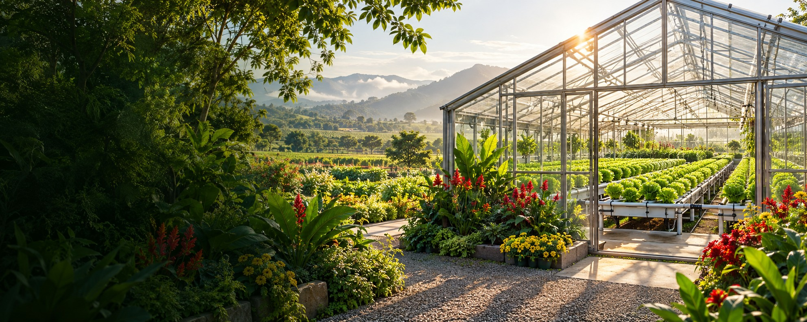
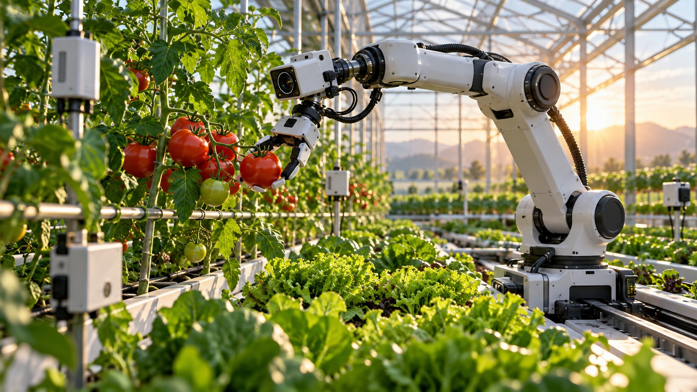

Crop & site
Define the crop, available space and local conditions before choosing equipment.

03 / SMART FARM
Thoughtful technology, connected to the life we grow.
Explore Our Smart Farm ApproachNATURE · WATER · ENERGY · EVERYDAY FOOD
THE NEIPCLOVA VISION
Healthy growth starts with sound foundations: suitable water, healthy soil or growing media, and a well-managed environment.
Neipclova’s direction connects nature and technology across water, energy and everyday living. Smart Farm brings these fields into the growing environment, from small cultivation spaces to larger project discussions.
Neipclova seeks to connect those foundations with robotics, AI, sensors, biology and specialty-film processing—from cultivation to automated packaging and delivery. Our aim is stronger growth and better preservation with careful use of limited resources.
FIVE FOUNDATIONS
Open each field to explore the project considerations.
Healthy soil or a suitable growing medium is a foundation for plant life. Root-zone conditions, water and the living community around roots should be considered together.
Beneficial microorganisms and appropriate insects can contribute to nutrient cycling, pollination and ecological balance. Species and cultivation methods must fit the crop and the system.
Neipclova’s direction brings biological understanding into engineering discussions, rather than treating a farm as equipment alone.
Read FAO’s soil biodiversity overviewStart with the crop and the space it needs. Greenhouse layouts, cultivation methods and daily work should be considered together.
Define the crop, available space and local conditions before choosing equipment.
Plan access, cleaning, plant care and the work that keeps a growing space usable.
Water deserves its own attention in every cultivation project. Begin with the source and the irrigation application, then discuss suitable water-handling and filtration requirements.
Neipclova’s Water and Smart Farm fields connect through careful application planning.
Explore Neipclova WaterConsider the energy required by the chosen growing system and the time it is needed. Equipment choices should reflect operating needs and available resources.
Solar electricity, suitable geothermal heating or cooling, generators and batteries belong within the wider energy plan. Availability, climate, demand and system design determine their role. LDK-family energy-support devices are an application-specific evaluation topic alongside this plan; they are not presented as a substitute for AI control, sensors or renewable-energy equipment.
Explore Neipclova EnergyNeipclova’s wider purpose reaches the places where people live and eat. A cultivation project should consider the intended harvest and how it will be handled and used.
Our vision connects growing spaces with daily life through thoughtful planning, appropriate partnerships and care for resources.
ONE INDUSTRY, MANY CONNECTED DISCIPLINES
Water and biology sustain the crop. Energy sustains its environment. Sensors, AI and robotics support observation and operation. Materials and packaging help carry the harvest forward.
A conceptual development pathway. Growth rate, energy use and distribution life are outcomes to assess in specific crop and packaging trials.
NATURE, WITH PURPOSE
For Neipclova, a smart farm is part of a wider relationship between nature, technology and a better life. Water and energy are considered together, with the growing environment at the centre.
Applications and available solutions are discussed individually. This page introduces our direction rather than a specific installed farm or a guaranteed cultivation result.
EXPLORE THE NEXT LAYER

Semiconductors, optics and sensors connecting observation to careful operation.
Explore this field
Pactive Korea’s processing experience connecting cultivation, antifog and automated packaging.
Explore this field
Micro-scale research, life-support thinking and the long-term horizon of space agriculture.
Explore this fieldFROM IDEA TO A PRACTICAL CONVERSATION
Your crop, site, goals and operating needs.
Water, energy and the growing environment.
Suitable partners and an application-specific approach.
Practical operation and observations from the project.
LET’S GROW THE CONVERSATION
Tell us about your crop, your space and your next step.